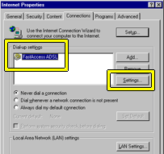
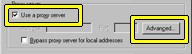
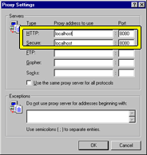

Please read the section below on how to set your browser up to use Proxomitron. Unless you do this, Proxomitron will not be able to filter web pages.
System Requirements
The Proxomitron was originally developed on a Pentium 120, and will work fine on such a system depending on your connection speed and the number and types of filters you use. Faster connections (like DSL and Cable) may require more CPU horsepower to filter. It should also work fine on Win 95,98,ME,NT,2000, and XP. However my ability to test on all platforms is limited. Please inform me if you do have any troubles here.
Upgrading from a previous versions
If you don't want to keep the previous version around, it's safe to simply copy the new files over top of the old (be sure to include the subfolders) . However first make backup copies or rename any config files you changed! Otherwise they'll be overwritten by the newer versions. To keep your changes either copy the config files somewhere else or simply change them from their original names (as in default.cfg to MyDefault.cfg ). This only applies to the config files included in the original distribution; any config files you named yourself will be fine.
Installation and Eradication
None needed really. Well, at least not in the normal sense...
Unlike many Windows programs which seem to insinuate their way into your system like some parasitic organism, the Proxomitron...
- copies no files to any folders outside its own,
- makes no changes to your system registry,
- and modifies no .ini files.
The Proxomitron normally comes in two flavors - one with an installer/uninstaller and one without. If you're used to copying files on your PC you don't really need the installer.
For the plain version just unzip the files wherever you wish. To uninstall just delete the folder containing the Proxomitron program. No further trace of it will be left anywhere else on your system. Because of this it's also safe to move the program folder from one place to another without having to "re-install."
Setting your web browser to use the Proxomitron
After "Installation" you must configure your web browser to use the program. This involves setting the browser's proxy option. Although it varies from browser to browser, most browsers have this option somewhere.
For Netscape: Run Netscape and go to the "Edit" menu. Select "Preferences > advanced > proxies". Click "Manual proxy configuration" then "View". Next under HTTP enter "localhost" and for port enter "8080". Leave the other proxy entries (FTP, Gopher, etc.) alone.
For Internet Explorer 5.x: Well, it seems with every version Microsoft has to bury this a little deeper (are they trying to hide it? ;-).
Anyway, here's the deal...
For Internet Explorer 3.x & 4.x: Select "View," "Internet Options," then click the "connections" tab. Click "Use proxy server" and click "advanced" or "settings" (for 4.0 and 3.0 respectively). Under HTTP enter "localhost" and for port "8080". Leave the other proxy entries (FTP, Gopher, etc.) alone. You can also set the proxy from the Control panel's Internet options.
For Other browsers: The process should be similar to one of the above. First locate where to set the HTTP proxy entry. Once you find it, set it to "localhost" with the port of "8080".
Here's an example taken from Netscape (other browsers will look much the same) of how the proxy configuration should look - note the areas highlighted in yellow. You want to find the screen with all of these options shown separately.
After the browser it configured, run the Proxomitron program. Now any connections your browser makes must go through, and be filtered by, The Proxomitron.
Warning: after configuring your browser for use with Proxomitron, it won't be able to find web pages unless the Proxomitron is running also! To bypass the Proxomitron entirely and return your browser to normal operation, just set your browser not to use a proxy server (or "direct connection to the Internet" as Netscape puts it). Both Netscape and Internet Explorer allow you to switch between these two settings with a simple checkbox in their proxy configuration screens.
To help make things more convenient, you can set the Proxomitron to automatically run your browser whenever it starts (See Configuration). Then simply start the Proxomitron whenever you would normally start your browser.
Note: If you are already connecting through a proxy server, you'll need to set the Proxomitron to use your original HTTP proxy settings. (See External Proxies).
(some cable modem and DSL users may need to click the LAN button if there's no ISP entry)




 Return to main index
Return to main index
{kind=link}
{kind=link}
{kind=link}